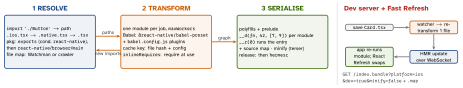

react-native · folio
In one line: Metro turns an entry file into one JS bundle + source map in three stages:
resolve every import into a dependency graph, transform each module with Babel
in parallel workers (cached per file), serialise the modules as __d(factory, id, deps)
definitions plus polyfills and a __r(entry) call. In development it is also the
server on :8081, pushing changed modules over a WebSocket for Fast Refresh.
Download PDF Print view LaTeX source


How it works
- Resolution and transformation overlap: each transformed module reveals new
imports to resolve.sourceExtsdefaultjs jsx json ts tsx; anything inassetExtsbecomes an asset record (scales@2x/@3x), not code. - Package
exports/importsresolution is on by default since Metro 0.82 (RN 0.79); conditions:react-native(+browseron web),require/import. - Transform cache (
cacheStores, default files inos.tmpdir()) is keyed by file content and transform options — a change in Babel config or an inlined env var can leave stale output:--reset-cache/expo start --clear. - Inline requires rewrite
requireto the first use site, so a module’s top-level code runs on first use — cheaper start-up; side-effect order changes. - Serialiser: numeric module ids (
createModuleIdFactory),getModulesRunBeforeMainModule(RN’sInitializeCore),getPolyfills. Metro 0.87 (RN 0.87): source maps 2× faster, half the memory. - Source maps: dev maps are served beside the bundle (DevTools uses them); release
--sourcemap-output+ compose with hermesc’s map before upload.
Fast Refresh — the rules
- File exports only components → only that module re-runs; hooks’ state kept.
- Exports anything else → that module and its importers re-run.
- Imported by code outside the React tree → full reload.
useState/useRefkeep values while hook order is unchanged;useEffect/useMemo/useCallbackalways re-run (deps ignored). Class state is not kept.// @refresh resetforces a remount.
Code splitting — the limits
Metro emits one bundle per app; import() resolves inside it. Dev servers can fetch lazily(unverified). Real split chunks on native: Re.Pack (Rspack/webpack, Module Federation). Expo Router async routes split on web. Hermes mmaps bytecode, so a big bundle costs less than it seems.
Expo’s Metro config adds
EXPO_PUBLIC_* inlining, tsconfig path aliases, require.context (Expo Router), CSS + web bundling, asset hashing, and production tree shaking (SDK 52+, EXPO_UNSTABLE_TREE_SHAKING=1 with EXPO_UNSTABLE_METRO_OPTIMIZE_GRAPH=1). Always extend expo/metro-config, never replace it.
Example — metro.config.js for a monorepo
const { getDefaultConfig, mergeConfig } =
require('@react-native/metro-config'); // Expo: 'expo/metro-config'
const path = require('path');
const root = path.resolve(__dirname, '../..');
module.exports = mergeConfig(getDefaultConfig(__dirname), {
watchFolders: [root], // packages/* live outside the app
resolver: {
nodeModulesPaths: [path.resolve(__dirname, 'node_modules'),
path.resolve(root, 'node_modules')],
blockList: [/\/fixtures\/.*/], // never crawl these
resolveRequest: (ctx, name, platform) =>
ctx.resolveRequest(ctx, name === 'lodash' ? 'lodash-es' : name, platform),
},
});Monorepos and symlinks
- Symlinks resolve by default since RN 0.73 — but only inside
watchFolders; the workspace root must be watched or “Unable to resolve module”. - Two copies of
react(app + hoisted) → “Invalid hook call”: force one vianodeModulesPaths,extraNodeModulesordisableHierarchicalLookup. - Expo’s
getDefaultConfigconfigures workspaces for you; start there.
Traps
- Works on the Mac, fails in Linux CI:
import './button'vsButton.tsx— case-insensitive APFS hid it. - Release app shows old JS: Release embeds the bundle at build; only Debug loads from Metro.
- “EMFILE: too many open files” / slow start → install Watchman.
- Changed an
.envvalue, app still old — inlined at transform time: clear the cache.
Symptom → fix
| Android device: no bundle | adb reverse tcp:8081 tcp:8081 (USB) or same Wi-Fi + dev-menu host |
| port 8081 busy | start --port 8082 — and reverse that port |
| Watchman “recrawl” warning | watchman watch-del <root> then watch-project <root> |
| new native dep, JS says “not found” | Metro cannot fix native: rebuild the app (pods / Gradle) |